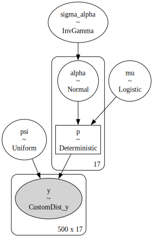
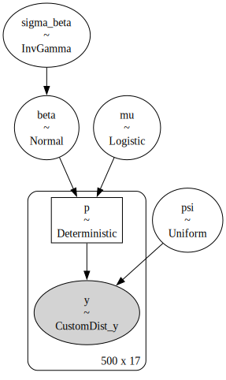
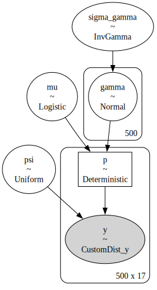
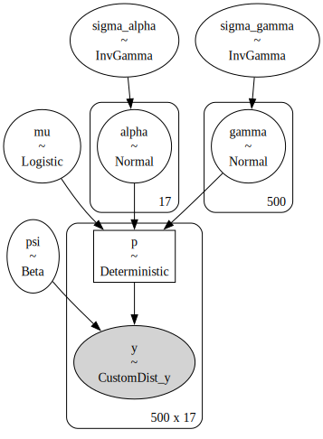
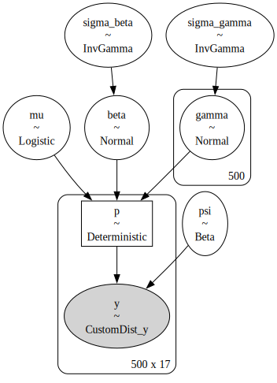
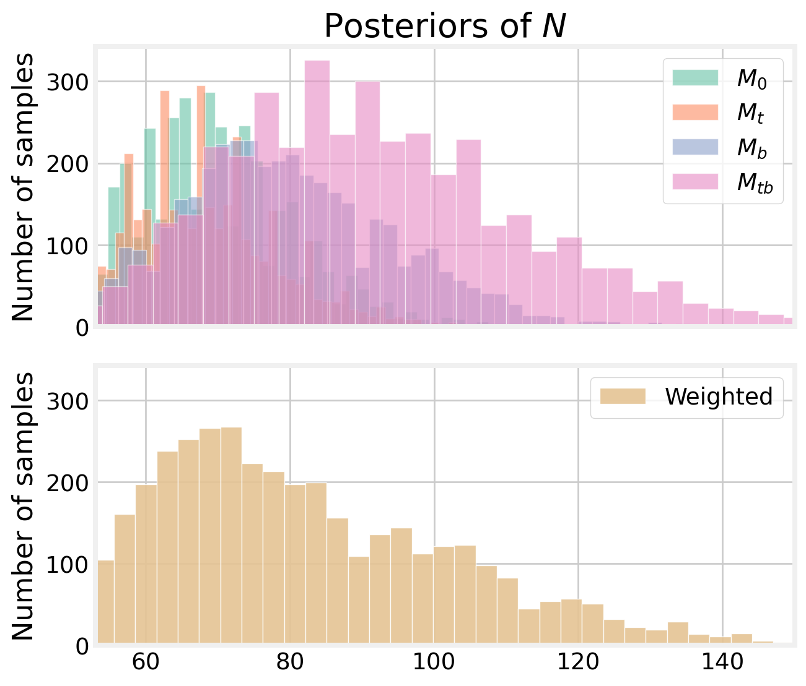

In this notebook, I demonstrate an approach to model selection in PyMC. To do so, follow the lead of King and Brooks (2008), although not nearly as elegantly. They demonstrate an approach to model selection for a typical suite of closed capture-recapture models. These include the effects of behavior \(b\), time \(t,\) and individual heterogeneity \(h\) on capture probabilities \(p\). The eight models considered here are combinations of the three: \(M_{0},\)\(M_{t},\)\(M_{b},\)\(M_{tb},\)\(M_{h},\)\(M_{th},\)\(M_{bh}\). The full model, \(M_{tbh}\), is \[
\begin{equation}
\text{logit} \; p_{it} = \mu + \alpha_t + \beta x_{it} + \gamma_i,
\end{equation}
\] where \(\mu\) is the average catchability, \(\alpha_t\) is the effect of each occasion on catchability, \(\beta\) is the behavioral effect, \(x_{it}\) indicates whether the individual has been previously caught, and \(\gamma_i\) is the individual random effect such that \(\gamma_i \sim \text{Normal}(0,\sigma)\). Formulating the model this way makes the other models nested subsets of the full model.
Like King and Brooks (2008), I use the the Moray Firth bottlenose dolphin data as a motivating example. Wilson, Hammond, and Thompson (1999) detected \(n=56\) dolphins over the course of \(T=17\) boat surveys between May and September 1992. They generated the capture-recapture histories by way of photo-identification, which is near and dear to my heart (and my dissertation).
%config InlineBackend.figure_format ='retina'# libraries import numpy as npimport pandas as pdimport pymc as pmimport arviz as azimport matplotlib.pyplot as plt import seaborn as snsfrom pymc.distributions.dist_math import binomln, logpowplt.style.use('fivethirtyeight')plt.rcParams['axes.facecolor'] ='white'plt.rcParams['figure.facecolor'] ='white'pal = sns.color_palette("Set2")sns.set_palette(pal)# hyperparameters SEED =808RNG = np.random.default_rng(SEED)def augment_history(history):'''Augment a capture history with all-zero histories.''' animals_captured, T = history.shape# create M - n all zero histories zero_history_count = M - animals_captured zero_history = np.zeros((zero_history_count, T))# tack those on to the capture history augmented = np.row_stack((history, zero_history))return augmented def get_behavior_covariate(history):# note the occasion when each individual was first seen first_seen = (history !=0).argmax(axis=1)# create the covariate for the behavior effect behavior_covariate = np.zeros_like(history)for i, f inenumerate(first_seen): behavior_covariate[i, (f +1):] =1return behavior_covariatedef get_occasion_covariate(history): _, T = history.shape l = []for t inrange(T): oc = np.zeros_like(history) oc[:, t] =1 l.append(oc)return np.stack(l, axis=2)def sim_N(idata): psi_samps = az.extract(idata).psi.values p_samps = az.extract(idata).p.values not_p = (1- p_samps)if p_samps.ndim ==1: p_included = psi_samps * (not_p) ** T number_undetected = RNG.binomial(M - n, p_included)elif p_samps.ndim ==3: p_included = psi_samps * not_p.prod(axis=1) number_undetected = RNG.binomial(1, p_included).sum(axis=0)# N = n + number_undetected N = RNG.binomial(M, psi_samps)return N# convert the dolphin capture history from '1001001' to arraydolphin = np.loadtxt('firth.txt', dtype=str)dolphin = np.array([list(map(int, d)) for d in dolphin])# augment the capture history with all zero historiesn, T = dolphin.shapeM =500dolphin_augmented = augment_history(dolphin)# covariates for t and boccasion_covariate = get_occasion_covariate(dolphin_augmented)behavior_covariate = get_behavior_covariate(dolphin_augmented)
/var/folders/7b/nb0vyhy90mdf30_65xwqzl300000gn/T/ipykernel_56378/3418041078.py:32: DeprecationWarning: `row_stack` alias is deprecated. Use `np.vstack` directly.
augmented = np.row_stack((history, zero_history))
The discovery curve, the number of unique dolphins encountered as a function of the total number of dolphins encountered, may be flattening. This suggests that, at this point in the study, Wilson, Hammond, and Thompson (1999) may have encountered many of the unique individuals in the population.
# how many dolphins have been seen?total_seen = dolphin.sum(axis=0).cumsum()# how many new dolphins have been seen?first_seen = (dolphin !=0).argmax(axis=1)newbies = [sum(first_seen == t) for t inrange(T)]total_newbies = np.cumsum(newbies)fig, ax = plt.subplots(figsize=(5, 3.5))ax.plot(total_seen, total_newbies)ax.fill_between(total_seen, total_newbies, alpha=0.2)ax.set_title('Discovery curve')ax.set_xlabel('Total dolphins')ax.set_ylabel('Unique dolphins')plt.show()
This notebook looks messier than the others, in that I train several models with little commentary along the way. In practice, it would probably be better to wrap these up into a function or a class. To complete the model, I used the following priors, \[
\begin{align}
\psi &\sim \text{Uniform}(0, 1)\\
\mu &\sim \text{Logistic}(0, 1) \\
\alpha_t &\sim \text{Normal}(0, \sigma_{\alpha}) \\
\beta &\sim \text{Normal}(0, \sigma_{\beta}) \\
\gamma_i &\sim \text{Normal}(0, \sigma_{\gamma}) \\
\sigma_{\alpha} &\sim \text{InverseGamma}(4, 3) \\
\sigma_{\beta} &\sim \text{InverseGamma}(4, 3) \\
\sigma_{\gamma} &\sim \text{InverseGamma}(4, 3),
\end{align}
\] which were also used by King and Brooks (2008). Although note that I used an informative \(\text{Beta}(1, 5)\) prior for \(\psi\) in the full model (see below). I use the same logp seen in the occupancy and closed capture-recapture notebooks, which accounts for row-level zero-inflation. Unlike other notebooks, I did not look at the summaries or the trace plots unless the sampler indicated that it had issues during training.
Throughout the notebook, I use the nutpie sampler within PyMC. Nutpie is a NUTS sampler written in Rust, and is often faster than PyMC. Also, I have tweaked the sampling keyword arguments for each model, since they are a little finicky.
with pm.Model() as m0:# Priors# inclusion psi = pm.Uniform('psi', 0, 1) # mean catchability mu = pm.Logistic('mu', 0, 1)# Linear model mu_matrix = (np.ones((T, M)) * mu).T p = pm.Deterministic('p', pm.math.invlogit(mu_matrix))# Likelihood pm.CustomDist('y',1, p, psi, logp=logp, observed=dolphin_augmented )pm.model_to_graphviz(m0)
Figure 2: Visual representation of model \(M_{0}\).
with m0: m0_idata = pm.sample()
Initializing NUTS using jitter+adapt_diag...
Multiprocess sampling (4 chains in 4 jobs)
NUTS: [psi, mu]
Sampling 4 chains for 1_000 tune and 1_000 draw iterations (4_000 + 4_000 draws total) took 1 seconds.
with pm.Model() as mt:# Priors# inclusion psi = pm.Uniform('psi', 0, 1) # mean catchability mu = pm.Logistic('mu', 0, 1)# time effect sigma_alpha = pm.InverseGamma('sigma_alpha', 4, 3) alpha = pm.Normal('alpha', 0, pm.math.sqrt(sigma_alpha), shape=T)# Linear model# nu = mu + pm.math.dot(occasion_covariate, alpha) nu = mu + alpha p = pm.Deterministic('p', pm.math.invlogit(nu))# Likelihood pm.CustomDist('y',1, p, psi, logp=logp, observed=dolphin_augmented )pm.model_to_graphviz(mt)

Figure 3: Visual representation of model \(M_t\).
with mt: mt_idata = pm.sample()# pass
Initializing NUTS using jitter+adapt_diag...
Multiprocess sampling (4 chains in 4 jobs)
NUTS: [psi, mu, sigma_alpha, alpha]
Sampling 4 chains for 1_000 tune and 1_000 draw iterations (4_000 + 4_000 draws total) took 2 seconds.
with pm.Model() as mb:# Priors# inclusion psi = pm.Uniform('psi', 0, 1) # mean catchability mu = pm.Logistic('mu', 0, 1)# behavior effect sigma_beta = pm.InverseGamma('sigma_beta', 4, 3) beta = pm.Normal('beta', 0, pm.math.sqrt(sigma_beta))# Linear model nu = mu + behavior_covariate * beta p = pm.Deterministic('p', pm.math.invlogit(nu))# Likelihood pm.CustomDist('y',1, p, psi, logp=logp, observed=dolphin_augmented )pm.model_to_graphviz(mb)

Figure 4: Visual representation of model \(M_b\).
with mb: mb_idata = pm.sample()
Initializing NUTS using jitter+adapt_diag...
Multiprocess sampling (4 chains in 4 jobs)
NUTS: [psi, mu, sigma_beta, beta]
Sampling 4 chains for 1_000 tune and 1_000 draw iterations (4_000 + 4_000 draws total) took 6 seconds.
with pm.Model() as mtb:# Priors# inclusion psi = pm.Uniform('psi', 0, 1) # mean catchability mu = pm.Logistic('mu', 0, 1)# time effect sigma_alpha = pm.InverseGamma('sigma_alpha', 4, 3) alpha = pm.Normal('alpha', 0, pm.math.sqrt(sigma_alpha), shape=T)# behavior effect sigma_beta = pm.InverseGamma('sigma_beta', 4, 3) beta = pm.Normal('beta', 0, pm.math.sqrt(sigma_beta))# Linear model nu = mu + alpha + behavior_covariate * beta p = pm.Deterministic('p', pm.math.invlogit(nu))# Likelihood pm.CustomDist('y',1, p, psi, logp=logp, observed=dolphin_augmented )pm.model_to_graphviz(mtb)
Figure 5: Visual representation of model \(M_{tb}\).
with mtb: mtb_idata = pm.sample()
Initializing NUTS using jitter+adapt_diag...
Multiprocess sampling (4 chains in 4 jobs)
NUTS: [psi, mu, sigma_alpha, alpha, sigma_beta, beta]
Sampling 4 chains for 1_000 tune and 1_000 draw iterations (4_000 + 4_000 draws total) took 11 seconds.
with pm.Model() as mh:# Priors# inclusion psi = pm.Uniform('psi', 0, 1) # mean catchability mu = pm.Logistic('mu', 0, 1)# individual effect sigma_gamma = pm.InverseGamma('sigma_gamma', 4, 3) gamma = pm.Normal('gamma', 0, pm.math.sqrt(sigma_gamma), shape=M)# Linear model individual_effect = (np.ones((T, M)) * gamma).T nu = mu + individual_effect p = pm.Deterministic('p', pm.math.invlogit(nu))# Likelihood pm.CustomDist('y',1, p, psi, logp=logp, observed=dolphin_augmented )pm.model_to_graphviz(mh)

Figure 6: Visual representation of model \(M_h\).
with mh: mh_idata = pm.sample(3000, target_accept=0.99, )
Initializing NUTS using jitter+adapt_diag...
Multiprocess sampling (4 chains in 4 jobs)
NUTS: [psi, mu, sigma_gamma, gamma]
Sampling 4 chains for 1_000 tune and 3_000 draw iterations (4_000 + 12_000 draws total) took 51 seconds.
The effective sample size per chain is smaller than 100 for some parameters. A higher number is needed for reliable rhat and ess computation. See https://arxiv.org/abs/1903.08008 for details
with pm.Model() as mth:# Priors# inclusion psi = pm.Beta('psi', 1, 1) # mean catchability mu = pm.Logistic('mu', 0, 1)# time effect sigma_alpha = pm.InverseGamma('sigma_alpha', 4, 3) alpha = pm.Normal('alpha', 0, pm.math.sqrt(sigma_alpha), shape=T)# individual effect sigma_gamma = pm.InverseGamma('sigma_gamma', 4, 3) gamma = pm.Normal('gamma', 0, pm.math.sqrt(sigma_gamma), shape=M)# Linear model individual_effect = (np.ones((T, M)) * gamma).T nu = mu + alpha + individual_effect p = pm.Deterministic('p', pm.math.invlogit(nu))# Likelihood pm.CustomDist('y',1, p, psi, logp=logp, observed=dolphin_augmented )pm.model_to_graphviz(mth)

Figure 7: Visual representation of model \(M_{th}\).
with mth: mth_idata = pm.sample(draws=3000, target_accept=0.95, )
Initializing NUTS using jitter+adapt_diag...
Multiprocess sampling (4 chains in 4 jobs)
NUTS: [psi, mu, sigma_alpha, alpha, sigma_gamma, gamma]
Sampling 4 chains for 1_000 tune and 3_000 draw iterations (4_000 + 12_000 draws total) took 70 seconds.
The effective sample size per chain is smaller than 100 for some parameters. A higher number is needed for reliable rhat and ess computation. See https://arxiv.org/abs/1903.08008 for details
with pm.Model() as mbh:# Priors# inclusion psi = pm.Beta('psi', 1, 1) # mean catchability mu = pm.Logistic('mu', 0, 1)# behavior effect sigma_beta = pm.InverseGamma('sigma_beta', 4, 3) beta = pm.Normal('beta', 0, pm.math.sqrt(sigma_beta))# individual effect sigma_gamma = pm.InverseGamma('sigma_gamma', 4, 3) gamma = pm.Normal('gamma', 0, pm.math.sqrt(sigma_gamma), shape=M)# Linear model individual_effect = (np.ones((T, M)) * gamma).T nu = mu + behavior_covariate * beta + individual_effect p = pm.Deterministic('p', pm.math.invlogit(nu))# Likelihood pm.CustomDist('y',1, p, psi, logp=logp, observed=dolphin_augmented )pm.model_to_graphviz(mbh)

Figure 9: Visual representation of model \(M_{bh}\).
with mbh: mbh_idata = pm.sample(draws=3000, target_accept=0.95, )
Initializing NUTS using jitter+adapt_diag...
Multiprocess sampling (4 chains in 4 jobs)
NUTS: [psi, mu, sigma_beta, beta, sigma_gamma, gamma]
Sampling 4 chains for 1_000 tune and 3_000 draw iterations (4_000 + 12_000 draws total) took 66 seconds.
The effective sample size per chain is smaller than 100 for some parameters. A higher number is needed for reliable rhat and ess computation. See https://arxiv.org/abs/1903.08008 for details
with pm.Model() as mtbh:# Priors# inclusion psi = pm.Beta('psi', 1, 5) # mean catchability mu = pm.Logistic('mu', 0, 1)# time effect sigma_alpha = pm.InverseGamma('sigma_alpha', 4, 3) alpha = pm.Normal('alpha', 0, pm.math.sqrt(sigma_alpha), shape=T)# behavior effect sigma_beta = pm.InverseGamma('sigma_beta', 4, 3) beta = pm.Normal('beta', 0, pm.math.sqrt(sigma_beta))# individual effect sigma_gamma = pm.InverseGamma('sigma_gamma', 4, 3) gamma = pm.Normal('gamma', 0, pm.math.sqrt(sigma_gamma), shape=M)# Linear model individual_effect = (np.ones((T, M)) * gamma).T nu = mu + alpha + behavior_covariate * beta + individual_effect p = pm.Deterministic('p', pm.math.invlogit(nu))# Likelihood pm.CustomDist('y',1, p, psi, logp=logp, observed=dolphin_augmented )pm.model_to_graphviz(mtbh)
Figure 10: Visual representation of model \(M_{tbh}\).
with mtbh: mtbh_idata = pm.sample(draws=2000, )
Initializing NUTS using jitter+adapt_diag...
Multiprocess sampling (4 chains in 4 jobs)
NUTS: [psi, mu, sigma_alpha, alpha, sigma_beta, beta, sigma_gamma, gamma]
Sampling 4 chains for 1_000 tune and 2_000 draw iterations (4_000 + 8_000 draws total) took 31 seconds.
The rhat statistic is larger than 1.01 for some parameters. This indicates problems during sampling. See https://arxiv.org/abs/1903.08008 for details
The effective sample size per chain is smaller than 100 for some parameters. A higher number is needed for reliable rhat and ess computation. See https://arxiv.org/abs/1903.08008 for details
Figure 11: Trace plots for the model with \(M_{tbh}\).
The trace plots and summary statistics show convergence issues for many of the individual heterogeneity models. The variance parameter, \(\sigma_{\gamma},\) seems to sample poorly. Further, models with both behavioral and individual effects lead to extremely large estimates of \(\psi\). This appears to happen regardless of the size of the data augmentation \(M.\)
Note that I upped the target_accept value for some models. This slows the sampler, but lowers the risk of divergence.
Model comparison
Next, I select a model for inference using an approximation of leave-one-out (loo) cross-validation (Vehtari, Gelman, and Gabry 2017). This approximation can be calculated using PyMC. To do so, I calculate the log-likelihood for each model, which is added to the InferenceData object. This makes it possible to compare the models using loo and az.compare.
/Users/philtpatton/source/repos/philpatton.github.io/.venv/lib/python3.13/site-packages/arviz/stats/stats.py:797: UserWarning: Estimated shape parameter of Pareto distribution is greater than 0.70 for one or more samples. You should consider using a more robust model, this is because importance sampling is less likely to work well if the marginal posterior and LOO posterior are very different. This is more likely to happen with a non-robust model and highly influential observations.
warnings.warn(
/Users/philtpatton/source/repos/philpatton.github.io/.venv/lib/python3.13/site-packages/arviz/stats/stats.py:797: UserWarning: Estimated shape parameter of Pareto distribution is greater than 0.70 for one or more samples. You should consider using a more robust model, this is because importance sampling is less likely to work well if the marginal posterior and LOO posterior are very different. This is more likely to happen with a non-robust model and highly influential observations.
warnings.warn(
/Users/philtpatton/source/repos/philpatton.github.io/.venv/lib/python3.13/site-packages/arviz/stats/stats.py:797: UserWarning: Estimated shape parameter of Pareto distribution is greater than 0.70 for one or more samples. You should consider using a more robust model, this is because importance sampling is less likely to work well if the marginal posterior and LOO posterior are very different. This is more likely to happen with a non-robust model and highly influential observations.
warnings.warn(
/Users/philtpatton/source/repos/philpatton.github.io/.venv/lib/python3.13/site-packages/arviz/stats/stats.py:797: UserWarning: Estimated shape parameter of Pareto distribution is greater than 0.70 for one or more samples. You should consider using a more robust model, this is because importance sampling is less likely to work well if the marginal posterior and LOO posterior are very different. This is more likely to happen with a non-robust model and highly influential observations.
warnings.warn(
The comparison tools notes issues with several of the models, suggesting a lack of robustness. Inspection of the comparison table shows that the struggling models all include the individual effect \(h.\) A more thorough analysis would consider reparameterizing the model, e.g., through the non-centered parameterization. In lieu of that, I simply discard the models that fail this test and re-do the comparison with the passing models.
The comparison shows that all of the model weight belongs to two models: \(M_t\) and \(M_{tb}.\)
Model averaged predictions
Finally, we can use the model weights to simulate a weighted posterior of \(N.\) To do so, I take a weighted sample of each of the posteriors of \(N,\) with the weight dictated by the comparison tool.
posteriors = [sim_N(good_dict[model]) for model in good_dict]weights = [good_comparison.loc[model].weight for model in good_dict]sample_count =len(posteriors[0])l = []for w, p inzip(weights, posteriors): weighted_sample = RNG.choice(p, size=int(w * sample_count)) l.append(weighted_sample)weighted_posterior = np.concatenate(l)fig, (ax0, ax1) = plt.subplots(2, 1, figsize=(7, 6), sharex=True, sharey=True, tight_layout=True)pal = sns.color_palette("Set2")# labs = [k for k in good_dict.keys()]labs = [r'$M_{0}$', r'$M_{t}$', r'$M_{b}$', r'$M_{tb}$']for i, p inenumerate(posteriors): ax0.hist(p, color=pal[i], edgecolor='white', bins=60, alpha=0.6, label=labs[i])ax0.set_title(r'Posteriors of $N$')# ax1.set_title(r'Weighted posterior')ax0.set_xlim((53, 150))ax0.legend()ax0.set_ylabel('Number of samples')ax1.set_ylabel('Number of samples')ax1.hist(weighted_posterior, edgecolor='white', bins=60, alpha=0.9, color=pal[6], label='Weighted')ax1.legend()plt.show()

Figure 13: Posteriors of \(N\) from the four models under consideration (top panel), with the model averaged posterior (bottom panel).
We can also look at the posterior densities of \(p\) from Model \(M_t,\) the second most weighted model.
p_samps = az.extract(mt_idata).pfig, ax = plt.subplots(figsize=(6, 4))a =0.4# ax[0].set_title("Poisson")pal = sns.color_palette('viridis', T)for t inrange(T): label_idx = t %2if label_idx ==0: az.plot_dist(p_samps[t], ax=ax, color=pal[t], label=f'$t_{{{t}}}$', plot_kwargs={'linewidth':3, 'alpha': a})else: az.plot_dist(p_samps[t], ax=ax, color=pal[t], plot_kwargs={'linewidth':3, 'alpha': a})ax.set_title(r'Posterior densities of $p$ from $M_t$')ax.set_xlabel(r'$p$')plt.show()
Figure 14: Posteriors of \(p\) from model \(M_t\)
This notebook demonstrates a simple way to compare models using leave one out cross-validation (loo) and a classic example from capture-recapture. This is just one way, however, to perform model comparison using PyMC. Perhaps a more effective solution for this problem would be placing a shrinkage prior on the \(\sigma\) parameters.
%load_ext watermark%watermark -n -u -v -iv -w
Last updated: Thu Oct 09 2025
Python implementation: CPython
Python version : 3.13.2
IPython version : 9.0.2
arviz : 0.21.0
pandas : 2.2.3
seaborn : 0.13.2
pymc : 5.22.0
matplotlib: 3.10.1
numpy : 2.1.3
Watermark: 2.5.0
References
King, Ruth, and SP2526632 Brooks. 2008. “On the Bayesian Estimation of a Closed Population Size in the Presence of Heterogeneity and Model Uncertainty.”Biometrics 64 (3): 816–24.
Vehtari, Aki, Andrew Gelman, and Jonah Gabry. 2017. “Practical Bayesian Model Evaluation Using Leave-One-Out Cross-Validation and WAIC.”Statistics and Computing 27: 1413–32.
Wilson, Ben, Philip S Hammond, and Paul M Thompson. 1999. “Estimating Size and Assessing Trends in a Coastal Bottlenose Dolphin Population.”Ecological Applications 9 (1): 288–300.